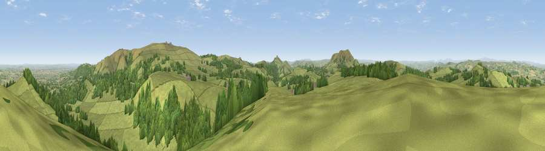

Shelve Hill
#3347 in England · top 9% of its area beats it · near ShelveWhere it is
The exact computed spot (SO 33874 99675). Click the marker for map links.
The view, rendered

A 360° render of this exact spot computed from the terrain model, tree cover and land cover — summer colours, afternoon light, calibrated against photographs of famous viewpoints. Real trees, hedges and buildings will differ in detail.
The panorama
Grey silhouette: terrain skyline in each direction (720 bearings, Earth curvature and refraction included). Dashed green: skyline with trees (+15 m) and buildings (+8 m) as obstacles. Blue strip: how far the ground is visible on each bearing.
Where the view opens
Wedge length = distance to the farthest visible ground on that bearing (vegetation-aware). Rings at 10, 25 and 50 km.
What fills the view
72% grassland · 24% woodland · 3% cropland
Angular shares of the visible panorama (visual magnitude), not map area. Landscape diversity 0.31 (0–1 Shannon).
Key numbers
More beautiful places nearby
The staircase of upgrades: each row has a higher view potential than everything closer. Driving times are estimates from straight-line distance, calibrated against real road routing — check an actual route before setting out.
| Place | Direction | Drive | Score |
|---|---|---|---|
| Bromlow Callow | NW · 2 km | ~5 min | 76.8 |
| Viewpoint near Stiperstones | E · 3 km | ~7 min | 77.4 |
| Viewpoint near Stiperstones | ENE · 4 km | ~9 min | 82.0 |
| Earl's Hill | NE · 9 km | ~17 min | 82.2 |
| Viewpoint near Asterton | SSE · 12 km | ~23 min | 83.0 |
| Viewpoint near Halfway House | NNW · 14 km | ~25 min | 83.3 |
| The Lawley | E · 16 km | ~28 min | 85.8 |
| Viewpoint near Little Wenlock | ENE · 30 km | ~47 min | 86.6 |
52.59084, -2.97755 · source: dobih hill · position refined by local search. Computed location — check access rights before visiting.